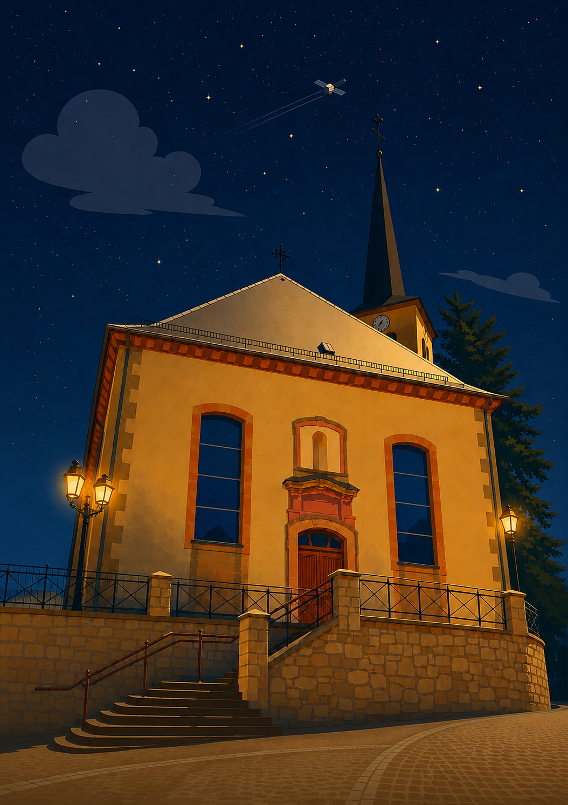

station de réception
Théding
MÉTÉOR-M2
137.900
MHz
49.11°N 6.98°E
RTL-SDR V3
⟳ 3 prochains passages
récupération des prédictions de passage...
Position en direct M2-3 ↗
·
Position en direct M2-4 ↗
hors enregistrement
⟳
▶ timelapse
observez l'évolution de la surface terrestre
ⓘ comment ça marche
timelapse ·
—
centrer la station
villes
× fermer
⏸
◀
▶
vitesse
×0.4
fondu
0.35s
comment ça marche
· chaîne du signal satellite → site web
× fermer
chargement...
ESC / fermer
← précédent
suivant →